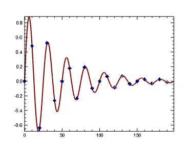

You can create plot graphics using the PLOT function. In this topic, we will use the PLOT function to draw a simple line.

; Define the data.
data = SIN(2.0*FINDGEN(200)*!PI/25.0)*EXP(-0.02*FINDGEN(200))
; Draw the plot.
p = PLOT(data, COLOR='maroon', THICK=2, $
SYMBOL=4, SYM_INCREMENT=10, $
SYM_FILLED=1, SYM_SIZE=1.5, SYM_COLOR='dark_blue')
Note: For a full explanation of all the PLOT properties, see PLOT.
| • | COLOR - defines the color of the line in the plot. |
| • | THICK - defines the line thickness. |
| • | SYMBOL - defines a symbol for the plot. |
| • | SYM_INCREMENT - defines the number of plot vertices between symbols. |
| • | SYM_FILLED - fills the symbol with the color defined in SYM_COLOR. |
| • | SYM_SIZE - defines the size of they symbol. For example, a value of 1.0 produces a symbol that is 10% of the width/height of the plot. |
| • | SYM_COLOR - defines the color of the symbol. |
Note: For an explanation of all plot properties, see the PLOT function. For all the symbol styles and colors, see Formatting symbols and lines.
| • | Change Graphics Properties |
| • | Multiple Graphics in One Window |
| • | Saving Graphics |
| • | PLOT |
| • | Graphics |
| • | Formatting IDL Graphics Symbols and Lines |